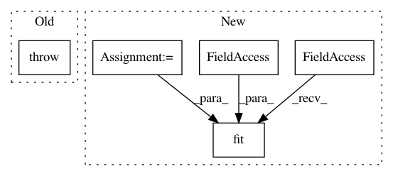

372bb17086792210b4bb6837f9dcf2e15264b845,tslearn/shapelets.py,ShapeletModel,fit,#ShapeletModel#Any#Any#,18
Before Change
self.shapelets_ = []
def fit(self, X, y=None):
raise NotImplementedError
def _check_monodim(self, Xi):
assert Xi.shape[1] == self.d == 1, "Model not implemented yet for multidimensional time series"
After Change
self.transformer_model.compile(loss="mean_squared_error",
optimizer=self.optimizer)
self._set_weights_false_conv(d=d)
self.model.fit(X, y_,
batch_size=self.batch_size,
epochs=self.epochs,
verbose=self.verbose_level)
return self
def predict(self, X):
categorical_preds = self.model.predict(X,
In pattern: SUPERPATTERN
Frequency: 3
Non-data size: 5
Instances
Project Name: rtavenar/tslearn
Commit Name: 372bb17086792210b4bb6837f9dcf2e15264b845
Time: 2017-08-28
Author: romain.tavenard@univ-rennes2.fr
File Name: tslearn/shapelets.py
Class Name: ShapeletModel
Method Name: fit
Project Name: IBM/adversarial-robustness-toolbox
Commit Name: 808a9456abffc31e306b99e8bbfb905a4cd74450
Time: 2019-06-18
Author: beat.buesser@ie.ibm.com
File Name: art/classifiers/catboost.py
Class Name: CatBoostARTClassifier
Method Name: fit
Project Name: IBM/adversarial-robustness-toolbox
Commit Name: 9f9266a5bd63c80bebd8623f7ca2c1330abe8693
Time: 2019-05-16
Author: beat.buesser@ie.ibm.com
File Name: art/classifiers/sklearn_svm.py
Class Name: SklearnSVC
Method Name: fit